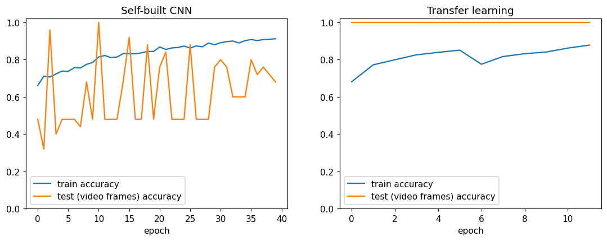
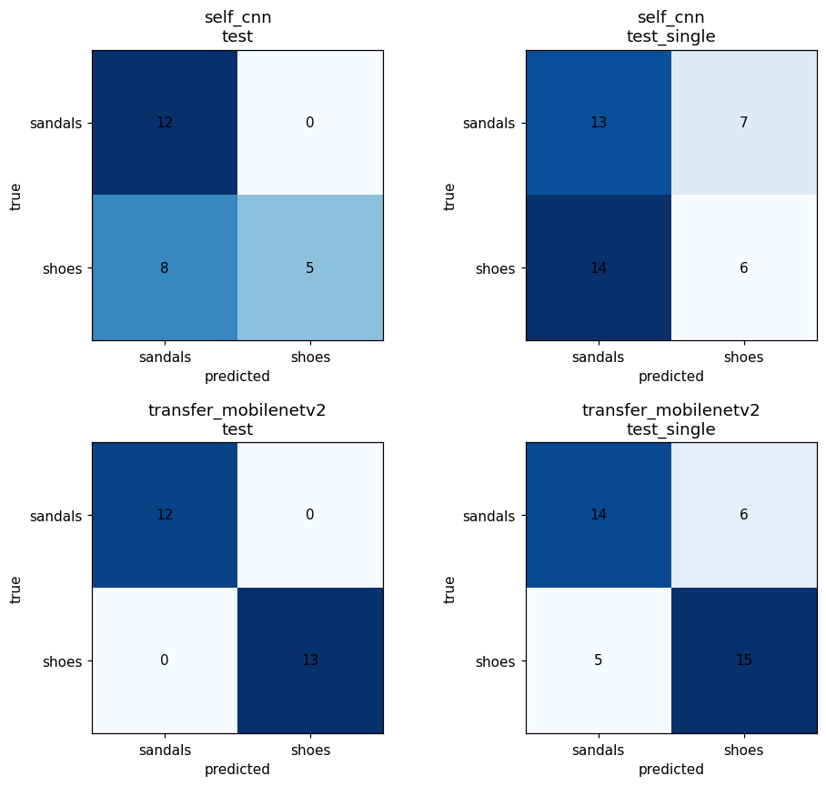

Shoe or sandal? Two models, one photo.
An image classifier trained on a dataset I collected myself: a convolutional network built from scratch, and a MobileNetV2 network fine-tuned with transfer learning. Both run directly in your browser, so your photo never leaves your device.
Try it
or click to choose one. One shoe or sandal per photo works best.
Or try one of the held-out test photos (never used in training):
Results
Two held-out test sets: video frames from recordings the models never saw, and single photos of pairs that were not in training. The single photos are the honest measure of how the website behaves, because that is what people upload.
| Model | Video frames (n=25) | Single photos (n=40) |
|---|---|---|
| Transfer learning, MobileNetV2 | 25 / 25 (100%) | 29 / 40 (72.5%) |
| Self-built CNN | 17 / 25 (68%) | 19 / 40 (47.5%) |
The test sets are small, so one image moves accuracy by 2.5 to 4 points, and repeated training runs vary by a few points. Read these as rough figures.


What the results mean
- Transfer learning wins clearly. MobileNetV2 already knows edges, textures and shapes from ImageNet, so a small dataset is enough to teach it the shoe and sandal difference.
- The self-built CNN did not generalise. Starting from random weights with about 2,200 images, it learned the look of shoe racks and shop shelves rather than footwear, and it is close to chance on single photos.
- The gap between the two test sets shows the main limitation. Most training images are frames of racks. Single items are the weaker case, and more single-item photos would help most.
Dataset
Primary dataset, collected for this project: videos recorded at shoe shops and racks, plus single photos contributed by family, friends and colleagues through a consent form. Faces and personal details were excluded, and phone metadata (location, device, time) was stripped.
| Split | Shoes | Sandals | Source |
|---|---|---|---|
| Train | 1,175 | 1,009 | Frames from 31 + 41 videos, and 53 + 44 single photos |
| Test (video frames) | 13 | 12 | One whole video per class, never seen in training |
| Test (single photos) | 20 | 20 | Single photos of pairs not in training |
"Sandals" covers every open style: sandals, chappals, Peshawari chappal, slippers and flip-flops. "Shoes" covers closed shoes: sneakers, joggers, formal shoes, boots and loafers.
Video frames were sampled every 0.5 seconds, with blurry and near-duplicate frames removed. Whole videos were kept in either train or test, never both, so test frames are not near-copies of training frames.
Method
Preprocessing
- Sideways phone photos corrected from EXIF orientation
- Resize to 224 × 224, scale pixels to the range -1 to 1
- Training-only augmentation: flips, small rotations, zoom, contrast, brightness
- Single photos weighted 5× a video frame; classes balanced
Models
- Self-built CNN: 4 blocks of Conv, BatchNorm, ReLU, MaxPool (32, 64, 128, 128 filters), global average pooling, dropout, sigmoid output. 40 epochs, Adam with cosine learning-rate decay.
- Transfer learning: MobileNetV2 pretrained on ImageNet. Stage 1 trains a new head with the base frozen; stage 2 fine-tunes the last 30 layers at learning rate 1e-5.
- Loss: binary cross-entropy. Output: probability the photo is a shoe.
Both trained models, their weight files, the training notebook and a command-line
predict.py are in the GitHub repository. Run a prediction with:
pip install -r requirements.txt python predict.py test_samples/shoes/shoes_01.jpg --model transfer